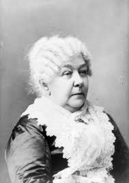

The womens suffrage movement took a decade long to win the right to vote for women in the US. It took activist and reformers nearly 100 years to win the fight and the campaign was not easy.
Disagreements over strategy threatened to cripple the movement more than once. But on August 18, 1920, the 19th amendment to the constitution was finally ratified.
This enfranchised all American women and declaring for the first time that they like men, deserve all the rights and responsibilities of citizenship.
Elizabeth Cady Stanton was a abolitionist activist and an American writer who was a leader of the women's rights movement in the U.S. during the 19th century.
Britannica - CC License Public domai
Information from History.com
Home